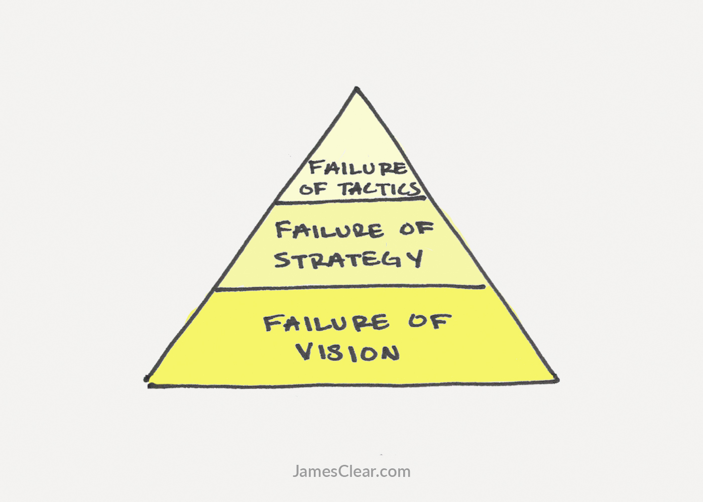
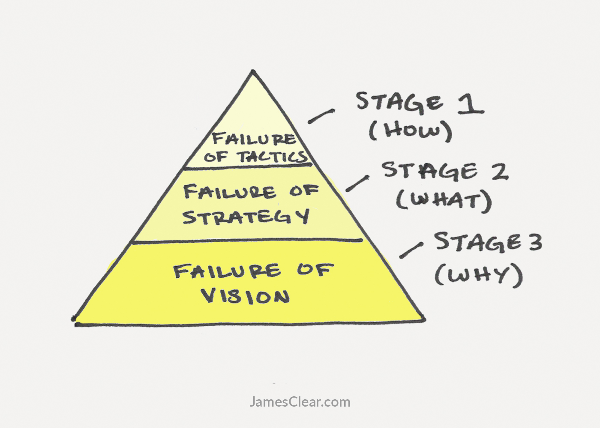
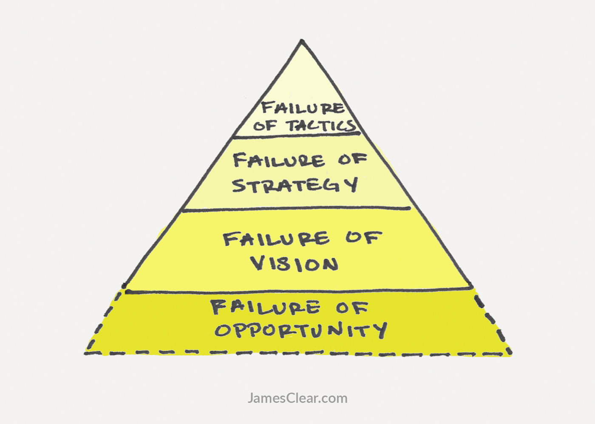

One of the hardest things in life is to know when to keep going and when to move on.
On the one hand, perseverance and grit are key to achieving success in any field. Anyone who masters their craft will face moments of doubt and somehow find the inner resolve to keep going. If you want to build a successful business or create a great marriage or learn a new skill then “sticking with it” is perhaps the most critical trait to possess.
On the other hand, telling someone to never give up is terrible advice. Successful people give up all the time. If something is not working, smart people don’t repeat it endlessly. They revise. They adjust. They pivot. They quit. As the saying goes, “Insanity is doing the same thing over and over again and expecting different results.” 1
Life requires both strategies. Sometimes you need to display unwavering confidence and double down on your efforts. Sometimes you need to abandon the things that aren’t working and try something new. The key question is: how do you know when to give up and when to stick with it?
One way to answer this question is to use a framework I call the 3 Stages of Failure.

The 3 Stages of Failure
This framework helps clarify things by breaking down challenges into three stages of failure:
- Stage 1 is a Failure of Tactics. These are HOW mistakes. They occur when you fail to build robust systems, forget to measure carefully, and get lazy with the details. A Failure of Tactics is a failure to execute on a good plan and a clear vision.
- Stage 2 is a Failure of Strategy. These are WHAT mistakes. They occur when you follow a strategy that fails to deliver the results you want. You can know why you do the things you do and you can know how to do the work, but still choose the wrong what to make it happen.
- Stage 3 is a Failure of Vision. These are WHY mistakes. They occur when you don’t set a clear direction for yourself, follow a vision that doesn’t fulfill you, or otherwise fail to understand why you do the things you do.
In the rest of this article, I’ll share a story, solution, and summary for each stage of failure. My hope is that the 3 Stages of Failure framework will help you navigate the tricky decision of deciding when to quit and when to stick with it. It’s not perfect, but I hope you find it to be useful.

Stage 1: A Failure of Tactics
Sam Carpenter became a small business owner in 1984. Using $5,000 as a down payment, he purchased a struggling business in Bend, Oregon and renamed it Centratel.
Centratel provided 24/7 telephone answering service for doctors, veterinarians, and other businesses that needed the phones to be answered at all hours, but couldn’t afford to pay a staff member to sit at the desk constantly. When he bought the business, Carpenter hoped that Centratel “would someday be the highest-quality telephone answering service in the United States.” 2
Things did not go as expected. In a 2012 interview, Carpenter described his first decade and a half of entrepreneurship by saying,
“I was literally working 80 to 100 hours a week for 15 years. I was a single parent of two kids, believe it or not. I was very sick. I was on all kinds of antidepressants and so forth…
I was going to miss a payroll and lose my entire company. If you can just imagine a nervous wreck, physical wreck, and then multiply that by ten, that’s what I was. It was a horrible time.”
One night, just before he was about to miss payroll, Carpenter had a realization. His business was struggling because it completely lacked the systems it needed to achieve optimal performance. In Carpenter’s words, “We were having all kinds of problems because everybody was doing it the way that they thought was best.”
Carpenter reasoned that if he could perfect his systems, then his staff could spend each day following best practices instead of constantly putting out fires. He immediately began writing down every process within the business.
“For instance,” he said. “We have a nine-step procedure for answering the phone at the front desk. Everybody does it that way, it’s 100% the best way to do it, and we’ve taken an organic system and made it mechanical, and made it perfect.” 3
Over the next two years, Carpenter recorded and revised every process in the company. How to make a sales presentation. How to deposit a check. How to pay client invoices. How to process payroll. He created a manual that any employee could pick up and follow for any procedure within the company—system by system, step by step.
What happened?
Carpenter’s workweek rapidly decreased from 100 hours per week to less than 10 hours per week. He was no longer needed to handle every emergency because there was a procedure to guide employees in each situation. As the quality of their work improved, Centratel raised their prices and the company’s profit margin exploded to 40 percent.
Today, Centratel has grown to nearly 60 employees and recently celebrated its 30th year in business. Carpenter now works just two hours per week.
Fixing a Failure of Tactics
A Failure of Tactics is a HOW problem. In Centratel’s case, they had a clear vision (to be “the highest-quality telephone answering service in the United States”) and a good strategy (the market for telephone answering services was large), but they didn’t know how to execute their strategy and vision.
There are three primary ways to fix Failures of Tactics.
- Record your process.
- Measure your outcomes.
- Review and adjust your tactics.
Record your process. McDonald’s has more than 35,000 locations worldwide. Why can they plug-and-play new employees while still delivering a consistent product? Because they have killer systems in place for every process. Whether you’re running a business, parenting a family, or managing your own life, building great systems is crucial for repeated success. It all starts with writing down each specific step of the process and developing a checklist you can follow when life gets crazy.
Measure your outcomes. If something is important to you, measure it. If you’re an entrepreneur, measure how many sales calls you make each day. If you’re a writer, measure how frequently you publish a new article. If you’re a weightlifter, measure how often you train. If you never measure your results, how will you know which tactics are working? 4
Review and adjust your tactics. The fatiguing thing about Stage 1 failures is that they never stop. Tactics that used to work will become obsolete. Tactics that were a bad idea previously might be a good idea now. You need to be constantly reviewing and improving how you do your work. Successful people routinely give up on tactics that don’t move their strategy and vision forward. Fixing a Failure of Tactics is not a one time job, it is a lifestyle.
Stage 2: A Failure of Strategy
It was March of 1999. Jeff Bezos, the founder of Amazon, had just announced that his company would launch a new service called Amazon Auctions to help people sell “virtually anything online.” The idea was to create something that could compete with eBay. Bezos knew there were millions of people with goods to sell and he wanted Amazon to be the place where those transactions happened. 5
Greg Linden, a software engineer for Amazon at the time, recalled the project by saying, “Behind the scenes, this was a herculean effort. People from around the company were pulled off their projects. The entire Auctions site, with all the features of eBay and more, was built from scratch. It was designed, architected, developed, tested, and launched in under three months.” 6
Amazon Auctions was a spectacular failure. Just six months after launch, management realized the project was going nowhere. In September 1999, they scrambled to release a new offering called Amazon zShops. This version of the idea allowed anyone from big companies to individuals to set up an online shop and sell goods through Amazon.
Again, Amazon swung and missed. Neither Amazon Auctions nor Amazon zShops are running today. In December 2014, Bezos referred to the failed projects by saying, “I’ve made billions of dollars of failures at Amazon.com. Literally billions.” 7
Undaunted, Amazon tried yet again to create a platform for third-party sellers. In November 2000, they launched Amazon Marketplace, which allowed individuals to sell used products alongside Amazon’s new items. For example, a small bookstore could list their used textbooks directly alongside new ones from Amazon. 8
It worked. Marketplace was a runaway success. In 2015, Amazon Marketplace accounted for nearly 50 percent of the $107 billion in sales on Amazon.com. 9
Fixing a Failure of Strategy
A Failure of Strategy is a WHAT problem. By 1999, Amazon had a clear vision to “be earth’s most customer centric company.” They were also masters of getting things done, which is why they were able to roll Amazon Auctions out in just three months. The why and how were handled, but the what was unknown.
There are three primary ways to fix Failures of Strategy.
- Launch it quickly.
- Do it cheaply.
- Revise it rapidly.
Launch it quickly. Some ideas work much better than others, but nobody really knows which ideas work until you try them. Nobody knows ahead of time—not venture capitalists, not the intelligent folks at Amazon, not your friends or family members. All of the planning and research and design is just pretext. I love Paul Graham’s take on this: “You haven’t really started working on [your idea] till you’ve launched.”
Because of this, it is critical to launch strategies quickly. The faster you test a strategy in the real world, the faster you get feedback on whether or not it works. Note the timeline Amazon operated on: Amazon Auctions was released in March 1999. Amazon zShops was released in September 1999. Amazon Marketplace was released in November 2000. Three huge attempts within 20 months.
Do it cheaply. Assuming you have achieved some minimum level of quality, it is best to test new strategies cheaply. Failing cheaply increases your surface area for success because it means that you can test more ideas. Additionally, doing things cheaply serves another crucial purpose. It reduces your attachment to a particular idea. If you invest a lot of time and money into a particular strategy, it will be hard to give it up on that strategy. The more energy you put into something, the more ownership you feel toward it. Bad business ideas, toxic relationships, and destructive habits of all kinds can be hard to let go once they become part of your identity. Testing new strategies cheaply avoids these pitfalls and increases the likelihood that you will follow the strategy that works best rather than the one you have invested in the most.
Revise it rapidly. Strategies are meant to be revised and adjusted. You’d be hard pressed to find a successful entrepreneur, artist, or creator who is doing exactly the same thing today as when they started. Starbucks sold coffee supplies and espresso machines for over a decade before opening their own stores. 37 Signals started as a web design firm before pivoting into a software company that is worth over $100M today. Nintendo made playing cards and vacuum cleaners before it stole the hearts of video game lovers everywhere. 10
Too many entrepreneurs think if their first business idea is a failure, they aren’t cut out for it. Too many artists assume that if their early work doesn’t get praised, they don’t have the skill required. Too many people believe if their first two or three relationships are bad, they will never find love.
Imagine if the forces of nature worked that way. What if Mother Nature only gave herself one shot at creating life? We’d all just be single-celled organisms. Thankfully, that’s not how evolution works. For millions of years, life has been adapting, evolving, revising, and iterating until it has reached the diverse and varied species that inhabit our planet today. It is not the natural course of things to figure it all out on the first try.
So if your original idea is a failure and you feel like you’re constantly revising and adjusting, cut yourself a break. Changing your strategy is normal. It is literally the way the world works. You have to stay on the bus.
Stage 3: A Failure of Vision
Ralph Waldo Emerson was born in Massachusetts in 1803. His father was a minister in the Unitarian Church, which was a relatively popular branch of Christianity at the time.
Like his father, Emerson attended Harvard and became an ordained pastor. Unlike his father, he found himself disagreeing with many of the church’s teachings after a few years on the inside. Emerson debated heavily with church leaders before eventually writing, “This mode of commemorating Christ is not suitable to me. That is reason enough why I should abandon it.” 11
Emerson resigned from the church in 1832 and spent the following year traveling throughout Europe. The travels sparked his imagination and led to friendships with contemporary philosophers and writers such as John Stuart Mill, William Wordsworth, Samuel Taylor Coleridge, and Thomas Carlyle. It was later written that his travels to Paris sparked “a moment of almost visionary intensity that pointed him away from theology and toward science.” 12
Upon returning to the United States, Emerson founded the Transcendental Club, which was a group of New England intellectuals like himself who wanted to talk about philosophy, culture, science, and improving American society.
Emerson’s deep questioning of his life and values, which began with his work as a pastor, intensified during his international travels, and continued with his Transcendental Club meetings helped him realize the desire to become a philosopher and writer. He spent the rest of his years pursuing independent ideas and writing essays and books that are still valued today.
Fixing a Failure of Vision
A Failure of Vision is a WHY problem. They happen because your vision or goal for what you want to become (your why) doesn’t align with the actions you are taking.
There are three primary ways to fix Failures of Vision.
- Take stock of your life.
- Determine your non-negotiable.
- Navigate criticism.
Take stock of your life. People rarely take the time to think critically about their vision and values. Of course, there is no requirement that says you must to develop a personal vision for your work or your life. Many people prefer to go-with-the-flow and take life as it comes. In theory, that’s just fine. But in practice, there is a problem:
If you never decide on a vision for your life, you’ll often find yourself living someone else’s dream.
Like many children, Emerson followed the path of his father to the same school and the same profession before opening his eyes and realizing it wasn’t what he wanted. Adopting someone else’s vision as your own—whether it be from family, friends, celebrities, your boss, or society as a whole—is unlikely to lead to your personal dream. Your identity and your habits need to be aligned.
Because of this, you need to take stock of your life. What do you want to accomplish? How do you want to spend your days? It is not someone else’s job to figure out the vision for your life. That can only be done by you. My suggestion is to start by exploring your core values. Then, review your recent experiences by writing an Annual Review or doing an Integrity Report. 13
Determine your non-negotiable. Your “non-negotiable” is the one thing you are not willing to budge on, no matter what. One common mistake is to make the non-negotiable your strategy, when it should be your vision. It’s very easy to get fixated on your idea. But if you’re going to get obsessed with something, get obsessed with your vision, not your idea. Be firm on the vision, not on this particular version of your idea. Jeff Bezos has said, “We are stubborn on vision. We are flexible on details.” 14
The key is to realize that nearly everything is a detail—your tactics, your strategy, even your business model. If your non-negotiable is to be a successful entrepreneur, then there are many ways to achieve that vision. If Amazon’s non-negotiable is to “be earth’s most customer centric company,” they can lose billions on Amazon Auctions and Amazon zShops and still reach their goal.
Once you are confident in your vision, it is rare to lose it in one fell swoop. There are so few mistakes that lead to the complete annihilation of a dream. More likely, you failed at a strategy level and felt demoralized. This crippled your enthusiasm and you gave up not because you should, but because you felt like it. Your emotions caused you to turn a Stage 1 or Stage 2 failure into a Stage 3 failure. Most of the mistakes that people assume are Failures of Vision are actually Failures of Strategy. Many entrepreneurs, artists, and creators get hung up on a particular version of their idea and when the idea fails they give up on the vision as well. Don’t develop a sense of ownership over the wrong thing. There are nearly infinite ways to achieve your vision if you are willing to be flexible on the details.
Navigate criticism. Criticism can be an indicator of failed strategies and tactics, but—assuming you’re a reasonable person with good intentions—it is rarely an indicator of a failed vision. If you are committed to making your vision a non-negotiable factor in your life and not giving up on the first try, then you have to be willing to navigate criticism. You don’t need to apologize for the things you love, but you do have to learn how to deal with haters.
The 4th Stage of Failure
There is a 4th stage of failure that we haven’t talked about: Failures of Opportunity.
These are WHO mistakes. They occur when society fails to provide equal opportunity for all people. Failures of Opportunity are the result of many complex factors: age, race, gender, income, education, and more.
For example, there are thousands of men my age living in the slums of India or the streets of Bangladesh who are more intelligent and more talented than I am, but we live very different lives largely because of the opportunities presented to us.
Failures of Opportunity deserve an article of their own and there are many things we can do as individuals and as a society to reduce them. However, I chose not to focus on them here because Failures of Opportunity are difficult to influence. Meanwhile, your vision, your strategy, and your tactics are all things you can directly control.

A Final Note on Failure
Hopefully, the 3 Stages of Failure framework has helped you clarify some of the issues you’re facing and how to deal with them. One thing that may not be apparent at first glance is how the different stages can impact one another.
For example, Failures of Tactics can occasionally create enough havoc that you mistakenly believe you have a Failure of Vision. Imagine how Sam Carpenter felt when he was working 100 hours per week. It would have been easy to assume that his vision of being an entrepreneur was the failure when, in fact, it was merely poor tactics causing the problem.
Sometimes you need a few tactics to create enough whitespace to figure out your strategy or vision. This is why I write about things like how to manage your daily routine and how to figure out your priorities and why multitasking is a myth. No, these topics aren’t going to create a world-changing vision by themselves. But they might clear enough space in your calendar for you to dream up a world-changing vision.
In other words, you might not be walking the wrong path after all. It’s just that there is so much dust swirling around you that you can’t see the path. Figure out the right tactics and strategy—clear the dust from the air—and you’ll find that the vision often reveals itself.
This quote is typically attributed to Albert Einstein, but there is no evidence that Einstein actually said it. For now, the original source remains unknown.
Work the System by Sam Carpenter. Page 28.
All quotes in this section are from the Mixergy interview with Sam Carpenter unless otherwise noted. Recorded on February 9, 2012.
Equally important, make sure you measure the right things. Don’t make the mistake of succeeding at the wrong thing. What is the metric that matters most to you?
Press release: Amazon.com Launches Online Auction Site. March 30, 1999.
Early Amazon: Auctions. April 30, 2006.
Comments made at the Business Insider Ignition conference in New York, NY. December 2, 2014.
Fun side note: my first entrepreneurial venture was selling used college textbooks through Amazon Marketplace. So, if we feel like stretching this, we could say that in a roundabout way Jeff Bezos bought me a few beers in college. Here’s to you, Mr. Bezos.
The Surprisingly Long History Nintendo by Tegan Jones. Gizmodo. September 20, 2013.
The Lord’s Supper by Ralph Waldo Emerson. September 9, 1832.
Emerson: The Mind on Fire by Robert Richardson. 1995.
I write my Annual Review each December, but obviously you can do this any time of the year.
How Jeff Bezos’ long-term thinking paid off big for Amazon by Devindra Hardawar. September 9, 2011.